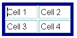
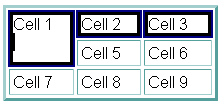
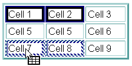
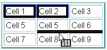
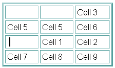

You are here: Editor project page > Composer Table Specs
Composer Table Editing
Summary of new direct table editing features:
| User Action | Mouse Hit Region | Modifier Key Pressed | Cursor | Status Message |
|---|---|---|---|---|
| Select Table | Upper left corner of table | no | "Select table (Press Ctrl to select all cells instead)" | |
| Select All Cells in Table | Upper left corner of table | yes | "Select all cells in table" | |
| Select Cell | Top border of cell | no | "Select or deselect cell" | |
| Anywhere inside a cell | yes | " | ||
| Drag Selected Cells | Anywhere inside any selected cell | no | "Relocate caret or drag selected table or cells" | |
| Select Row | Near left border of table to the left of row | no | "Select all cells in row" | |
| Append to Selected Rows | yes | |||
| Select Column | Near top border of table above column | no | "Select all cells in column" | |
| Append to Selected Columns | yes | " | ||
| Size Column Width | Near right border of any cell in column | no | "Drag to change width of column to the left" | |
| Size Row Height | Near bottom border of any cell in row | no | "Drag to change height of row above" | |
| Size Table Width | Near right table border | yes | "Drag to change width of table" | |
| Size Table Height | Near bottom table border | yes | "Drag to change height of table" | |
| Add Rows | Lower left corner of table | no | "Drag down to add more rows to the table" | |
| Add Columns | Lower right corner of table | no | "Drag right to add more columns to the table" |
Description:
- The "User Action" is what happens when mouse goes down when the
cursor looks like the icon shown. Sizing and dragging involve moving
the cursor with the mouse down, of course. There are two general "User
Rules":
- Watch your cursor! As you mouse over the table, the cursor tells you what action is possible. There should be a status message in the usual area at the window bottom to help the user understand what action is possible. (These are XP strings and should be used by all FEs). Kathy: can the Mac do this?
- Press the modifier key and watch the cursor and status line. If the cursor changes, a different action is possible and the status information should communicate that.
-
Selecting a single object is
just a single click. Other selection behavior:
- A selected table should show a single highlighted border
around the entire table:

Selected cells should show highlighting around each cell individually. - For the purpose of selection (as well as in the Cell
property dialog), a "column" is all cells sharing the same left
border (X value), and a row is all cells sharing the same top
border (Y value.) Thus cells with COLSPAN > 1 or rowspan
>1 will be not be included in the spanned column or row
(i.e., they are only members of one row or column - the one
matching their top or left edge respectively.)
 1st row 2nd row
2nd row - Multiple cells can be selected by holding the "Modifier key" (Ctrl in Windows an UNIX, Cmd on the Mac) and clicking on non-contiguous cells. A cell already selected will be unselected if the modifier is down when user clicks. Non-contiguous rows or columns can also be selected by holding down the Modifier key when clicking on a second row or column hit region after the initial selection. (You cannot unselect a row or column in this way, however.)
- Another way to select multiple cells is to place the caret in a cell, then drag into a neighboring cell -- as soon as the cursor leaves the first cell, any text selected is unselected, and we go into "cell selection mode." As the mouse is dragged with the mouse button is still down, a set of cells can be selected or unselected starting with the initial cell as the upper left corner, and the cell under the cursor as the lower-right cell in the rectangle.
- Multiple columns or rows can also be selected by clicking on the appropriate area to select the initial row or column, then dragging: left/right for more columns, or up/down for more rows.
- Whenever one or more cells or the table are selected, there is also the blinking caret. Selecting a table or one or more cells will move the caret into the table, usually in the top-left cell of the selection. When the user starts typing, the table or cell selection should disappear and the characters are input at the caret location. There should never be the usual selection style for text or other objects visible at the same time as selected cells or tables. There may be more than one cell selected in a table, of course, but never in different tables within the same page.
- Whenever the user clicks the mouse and is not on a cell or table selection hit area, the caret should be moved (or non-table object selected) and cell or table selection should be removed.
- A selected table should show a single highlighted border
around the entire table:
-
The "Mouse Hit
Regions" depend on the intercell spacing, border thickness, and
intracell padding values.
- In general, the sizing selection regions try to use as much of the intracell ("Cell padding") and intercell space ("Cell spacing") to avoid conflicting with the user's attempt to place a caret in the text within a cell.
- When there is intercell spacing, that region is available for sizing a row or columns, so there is less area within the cell that is used.
- The user should be able to place the caret in any of the four corners of a cell, and along the entire left border (just to the right of the border). These corners are excluded from the table-hit regions to facilitate caret placement.
- The most difficult condition to select and size cells is when the table border, cell spacing, and cell padding values are all zero. This is used when the purpose of the table is to layout regions of the page akin to a "desktop publishing" program. We advise users to keep some Spacing and Padding while editing and data entry, then convert to the zero values when finished.
- When a cell has no border, Composer shows the cell boundary with a single-pixel dashed line. This is controlled by the "Table Border" setting in the Table Properties dialog. When the table has a border width > 0, the cell has a 1-pixel visible border. The exception is an empty cell, which will not display its borders at all (as well as not displaying the background color or image.) In that case, the dashed line should be displayed to indicate this condition to the user. (A single space will cause the border to display - see next topic.)
-
Automatic filling in
of new empty cells with spaces
- There is a hidden preference (editor.new_cell_has_space), whose default value is YES. A single space is placed in any cell created in Composer, such as when new tables, rows, columns, or cells are inserted by the user, or automatically when padding rows or columns after pasting cells (to keep the table geometry regular.). This allows the border, background color, and background image to display in the Browser.
- Cells that are pasted into the page, or when the page is initially loaded, are not affected - completely empty cells will not have the space automatically inserted.
- A user can remove this space by using the delete key.
-
What to do with selected cells or
table
- Once a set of cells is selected, any character or paragraph formating action will apply to the contents of each selected cell.
- The background color of a selected table or any set of
selected cells can be quickly changed by holding down the Alt
key and clicking on the color widget on the toolbar. (The
tooltip and status line help describe the availability of this
otherwise hidden feature.)
This is currently implemented only on Windows Do we plan to support it on Mac and UNIX? - In the case of a selected table, all formating actions are the same as if all cells in the table are selected except for alignment. If alignment is changed using the toolbar drop-down button bar, or from the Format | Align menu, this will change the horizontal alignment of the table relative to the Composer window. To set the alignment of the contents in all cells, select all cells in the table first.
- The delete key will delete the contents of all selected cells. If all the cells in a row or column are deleted, the row or column boundaries will also be deleted. This is done to not upset the geometry of the table when only a partial row or column is deleted. If the table is deleted, the entire table should be completed deleted
- The usual copy and cut commands are also available. The same rules for the delete key apply for deleting contents-only or entire rows, columns, or the table.
-
Sizing behavior
- When a sizing icon is visible, click and drag to resize a column, row, or the table. The item to be sized does not have to be selected first, although that should not interfere with the ability to size.
- As the cursor is dragged, information about the changing in size should be displayed in the status area. For example: "Width = 43 pixels, 53% of previous width."
- Sizing a column or row will set the width (for columns) or height (for rows) of all cells in that column or row. For the purpose of sizing, the "column" is all cells sharing the same right border location (X value) and a "row" is all cells sharing the same bottom border location (Y value.) Note that this is different from the concept of a column or cell for the purpose of selection.
- When a column or row is sized, this changes the dimensions for all cells involved, and the parent table, to Pixel mode. This is the only way to control the sizing, that is, to have the size as close as possible to where the user lifts the mouse button when done, because of the limitations of how table layout works in HTML 3.2.
- In previous versions, the only direct sizing that was possible was sizing the entire table's width. In Gromit, this is deliberately less discoverable (the Modifier Key must be pressed) because of the difficulty to do table sizing under HTML 3.2, and to reduce accidental confusion between sizing the table or sizing the last row or column in the table. When sizing the table width or height, all cells are temporarily converted to "Percent mode", then converted back to the previous mode after sizing and relayout is finished. If we didn't do this, the table would most likely not resize correctly, especially when reducing the width or height, if any of the cells already had width or height already set, and it would cause much more distortion in the column widths or row heights. This is another good reason to make direct table sizing a rare thing -- sizing individual columns and rows should be preferred by most users.
- Adding more rows or columns by dragging the bottom left or right corners is related to sizing the table. Visual feedback should be given to show the number of rows or columns being added, as well as numeric information on the status line, e.g.: "Add 2 row(s) to the table"
-
Pasting and
Tables
- Text and other HTML objects can be pasted into a table just as before. If any cells or table are selected, non-table data on the clipboard should not replace the selected cells' contents, but it will insert the clipboard data at the location of the blinking caret.
- When cells are copied to the clipboard, they are formated into a table. Thus any set of cells that are cut or copied and then pasted into a page at a location not inside an existing table will insert a new table at the insert caret location. If text or HTML objects are selected, they will be deleted and replaced by the pasted table.
- The table clipboard data also records the type of source
data was: a full table, row(s), column(s) or arbitrary selected
cells. Default behavior when pasting table data into an
existing table are designed to avoid asking the user how they
want to format the paste:
- If the caret is in a cell, but no cells are selected, the cells will be inserted as a row above the current row if the source type is row, or as a column before the current column if the source type is any other type.
- If cells in a table are selected, the source data will be "poured" into the table replacing the selected cells in a "left to right" first fashion until all selected cells are replaced or there is no more source cells. Selected cells not replaced will not have their contents deleted. If there are more source cells than selected cells, a message box should appear telling the user "Not all cells in source were pasted".
- More precise pasting is available using the menus: When
table data is available on the clipboard and the caret is in a
table or cells are selected, the Table menu and the
Context/Popup menu contains a submenu: "Paste into Table." (It
is greyed out in the Table menu if not appropriate.) It has the
following items:
- Nested Table
- Above current Row
- Below current Row
- Before current Column
- After current Column
- "Replace" if no cells are selected, or "Replace
Selected Cells" if cells are selected.
- "Replace Selected Cells" acts like the default action described above.
- "Replace" replaces cells starting with the cell with the caret, and replacing cells according to the geometry (pattern of cells and rows) of the source data.
- Drag and Drop behavior Windows only?
- When table cells are dragged, the cell data ends up on the clipboard just like copying does. Dropping the data is the similar to pasting. During the drag process, a cursor icon should show the user what is being dragged: This is the same as earlier versions, including the addition of a "+" to the icon when the drop will end up copying the source (In Windows: when dragging into a different Composer window, or when the Ctrl key is pressed when dropping within the same window.)
- Since we are in a special mode when dragging, we can give
the user more flexibility about how to paste the data -- more
like that in the "Paste into Table" submenu discussed above.
- When the source type is a selected table, or when
dragging selected cells over text, the "Drop caret" is
used to indicate where a complete new table will be
inserted:
Thus a complete table can be dropped as a nested table in another table using this technique.
The location of the Drop Caret "snaps" to the available insert point and is not necessarily directly beneath the Drag Cursor location.
The rest applies only to dragging cells, not a selected table: - When the mouse is moved over a cell (cursor hotspot
is over central area of a cell), a pattern of cells is
highlighted by the "special selection" style --
typically a dashed or dotted highlight:
Cells 1 and 2 are being dragged over Cell 7. Cells 7 and 8 will be replaced when mouse button goes up. - When the mouse moves between cells (or near the
neighboring borders if Cell Spacing is 0), a blinking
caret shows that cells will be inserted as a new row or
column:
The solid line between Cells 5, 6 and 8, 9 is the location of the blinking caret. Note that the start of the inserted cells will be above Cell 8 because the cursor is over that cell. The length of the caret should indicate the number of cells to be inserted, although the new row to be inserted will be padded with extra empty cell(s) as needed to keep table pattern regular.
Here is the result of the paste:
Note that Cells 1 and 2 were moved. If the modifier key was pressed, they would have been copied instead. - When the source type is Row, inserting between columns is not allowed, and when the source type is Column, inserting between rows is not allowed. For the "selected cells" type, either is allowed. Only the appropriately-oriented blinking caret is displayed while dragging.
- When the source type is a selected table, or when
dragging selected cells over text, the "Drop caret" is
used to indicate where a complete new table will be
inserted:
- When the dropped cells are pasted, all of the source cells are usually pasted. If the number of cells in the source rows or columns are greater than the available space in the destination table, new rows and columns will be created to accomodate the pasted cells and keep the pattern regular. The only exception to this is when copying between windows and the destination table has some selected cells. If the mouse cursor is dragged over any of the selected cells, those cells define the target cells to be replaced. Thus all the source cells may not be pasted if the number of selected cells is less than the number in the source table. A popup message informs the user when not all of the cells are pasted.
- To greatly simplify how cells are replaced, the COLSPAN and rowspan values of the source cells are ignored and the values in the cells to be replaced are retained. When inserting new columns or rows, the source COLSPAN and rowspan are retained. This greatly minimizes the disruption of the layout of the destination table while allowing the flexibility of different ways to paste without having to ask the user for extra information.
- New Table and Cell Property Dialogs are described in the Table Dialogs.
- Other Table Editing Features available
from the Table Menu or Context/Popup Menu
(To be completed.)